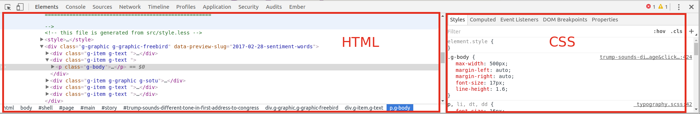

In-class Exercise: CSS
Resources
- This HTML Dog page lists the more common CSS properties you'll be using.
- This CSS cheat sheet is a bit more terse but you might find it useful.
- There are more exhaustive references on CSS-Tricks and the Mozilla Developer Network.
Part 1: Use developer tools to change other webpages' CSS
- Load a webpage in your browser.
- Open developer tools:
-
Using the Select Element tool, select an element:

-
On the left you should see the HTML for the element, and on the right you should see the CSS for it. The CSS might be more complicated depending on the page you're looking at.
 -
Style the element by clicking to the right of
element.stylein the CSS area. Start typing a property, use the arrow keys to select it, then press tab and type a value. This has an identical effect to adding CSS to astyleattribute in an element.
- Use the Select Element tool to find another element you would like to style. This time, instead of styling by adding properties to
element.styleadd and change properties within one of the existing CSS statements that work on the element. When you do, multiple elements on the page should change. - Continue defacing the page and get a feeling for how the CSS on the page works. In particular, look at turning properties off (using the checkboxes to the left of them) and changing colors using the built-in color picker.
Part 2: Add CSS to your Glitch site
- Log in to Glitch.
- Open your project from last class.
- Open your
style.cssfile (on the left of the page). - Edit the CSS. Change the background color (of the
body), font size. - Add a class to one of your elements and style that class.
Part 3: Add CSS to another webpage
- Open this Glitch project and "remix" it in your account by clicking on the project name, then Remix This.
- Let's add some style. In the
styles.cssfile, add a line after
and paste the following:/* Your styles go here */
There should now be much more room between paragraphs. We selected the paragraph elements (p { margin-top: 100px; }p) and set themargin-topproperty to100px. - Style all the links (
aelements) by adding a CSS statement after the statement we just added and setting properties as you like. I recommendcolor,background-color, andtext-decorationfor starters. - Change the font family for the entire page by modifying the
font-familyfor thebody. For now lets set it to the genericsans-serif. Read more about this and see an example at CSS-Tricks. -
CSS can do much more than select all elements of a type and style those. For example, notice that there are a few
spanelements in the HTML we're working with. They have been invisible so far becausespanelements have no style by default. Let's style some of them now by adding a new statement:.sign-label { color: red; }Why did we use
.sign-labelfor the selector instead ofspan? Because you generally don't want to style allspanelements on a page, and in this case we only wanted to style the ones that are of classsign-label. -
There are two links (
aelements) on this page. Let's style the one that links to Carto differently.Find the link to Carto:
<a href="https://eric.carto.com...">Carto</a>and add a
styleattribute to it:<a href="https://eric.carto.com..." style="">Carto</a>then add some CSS to the style:
<a href="https://eric.carto.com..." style="font-weight: bold;">Carto</a>You can add as many CSS properties as you like to a
styleattribute on an element, just remember to separate them with semicolons (;). Add another CSS property to the link'sstyleattribute now.